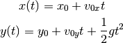
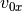
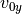
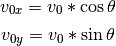
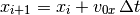

Movimiento en dos dimensiones¶
En Física, el movimiento en dos o más dimensiones se descompone como movimientos diferentes, o desligados entre sí, en cada dimensión. En esta sección vamos a apreciar como se modelan dos fenómenos de este tipo.
Tiro parabólico¶
De sus cursos de física seguramente recordarán que el tiro parabólico consiste en el lanzamiento de un objeto con cierto inclinación con respecto al eje x, cuya trayectoria forma una parábola. Este movimiento se compone a su vez de dos movimientos separados:
- En el eje x el objeto se mueve con velocidad constante.
- En el eje y el objeto se mueve con aceleración constante.
Las ecuaciones que describen este fenómeno son:
(1)
donde  y  son las velocidades iniciales en x e y respectivamente, las cuales se calculan con las fórmulas:

siendo  la magnitud del vector velocidad inicial.
la magnitud del vector velocidad inicial.
Con estos datos vamos a simular el tiro parabólico, a través de los ejercicios que aparecen a continuación.
Ejercicios¶
Crear un programa que calcule la evolución de un objeto que siga las ecuaciones (1), con el método de Verlet.
Sugerencias:
Crear dos listas posiciones_x y posiciones_y, para guardar las posiciones en cada eje de coordenadas.
Para obtener las nuevas posiciones en y, usar el mismo código que se usó para la caída de la bola, pero cambiando la posición y velocidad iniciales.
Además, cambiar el nombre de velocidades a velocidades_y.
Para obtener las nuevas posiciones en x, no es necesario determinar nuevas velocidades y añadirlas a velocidades_x, porque la velocidad es constante. En otras palabras, las nuevas posiciones debe calcularse como:

Hacer una animación con VPython de este sistema dinámico.